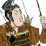

Enables
- Buildings:


- Units: 

Spawned Garrisons
- Units:
Basic Building Statistics (can be modified by difficulty level, arts, skills, traits and retainers)
- Cost: 600
- +4 to repression in this province
- Recruitment capacity (units in training): +1
Description
The land is the clay that makes men.
The tadokoro has many important functions in a province. It allows the recruitment of naginata and bow-armed levies. It also allows the more efficient administration of an area, meaning that more units can be recruited at the same time, and acts as a base for law enforcement. Before the Gempei War, central authority in Japan was not strong. Individual provincial governors had every reason to keep an eye on their people, watching for signs of unrest: trouble could always be used by a jealous rival to oust a ruling family. The correct relationships between different classes in society also had to be maintained, and this is where the very public presence of an inspector, or junsatsushi, could be very useful. He alone could make sure that malcontents stayed silent.